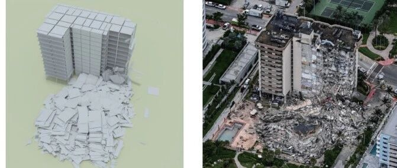

综述论文：地震灾害和意外事件下建筑结构抗倒塌研究：进展和展望

地震灾害和意外事件下建筑结构抗倒塌研究：进展和展望
林楷奇，吴苏静，郑俊浩，李易，陈素文，陆新征
摘 要：建筑是城市安全的主要承灾体和城市功能的承载体，随着经济的发展，需要建设大量的公共、商业等建筑以满足各类社会生产、生活需求。地震灾害和意外事件都可能导致建筑结构倒塌，造成人民生命财产损失和恶劣的社会影响。近年来，各类倒塌事件不断，暴露出现有建筑抗倒塌能力仍然存在众多隐患。因此越来越多的专家学者开始关注建筑结构的抗倒塌问题，通过理论、试验与数值模拟等，在建筑结构抗倒塌研究领域取得了显著进展。首先回顾了汶川地震对我国结构抗地震倒塌研究和抗震设计规范的影响与挑战，梳理结构抗倒塌设计的发展历程，讨论了近期国内外建筑倒塌事件和极罕遇地震对既有方法和理论的冲击和启示。基于文献调研分析了目前抗倒塌领域的发展和存在的关键科学问题，从建筑倒塌计算模型、设计理论、抗倒塌性能要求/可接受水准、不同类型建筑抗倒塌研究和设计规范与标准等方面探讨目前结构抗倒塌研究现状，总结归纳了建筑结构抗倒塌研究和工程实践在新结构抗倒塌设计理论发展、计算模型创新、复杂荷载作用下的倒塌模型研发及抗倒塌设计规范与标准完善等方面的未来发展方向。
关键词：建筑倒塌；地震倒塌；连续倒塌；极端灾害；意外事件
地震等极端灾害会导致严重的建筑倒塌破坏，从而造成大量人员伤亡和社会经济财产损失，如：2008年的四川8.0级汶川地震、2010年的青海7.1级玉树地震和海地7.3级地震、2023年土-叙7.8级地震以及2024年日本能登半岛7.6级地震等。此外，在社会经济生产过程中，多种意外事件（如爆炸、撞击等）也会导致建筑结构的倒塌，造成恶劣的社会影响和生命财产损失，国际上先后发生了多起由于极端事件造成建筑倒塌的著名事件，如：1968年的英国伦敦Ronan Point公寓爆炸事件[1]、1995年的美国Alfred P Murrah联邦政府大楼爆炸事件[2]以及2001年的“9·11”恐怖袭击事件等[3]。
建筑是城市安全的主要承灾体和城市功能的承载体[4]。在这些灾害事件中，建筑倒塌是造成人员伤亡的主要因素，如何提升建筑的抗倒塌能力是提升城市防灾减灾能力的重要研究方向。根据建筑倒塌机理和承受作用力的不同，结构倒塌类型可以分为：1）水平荷载（如地震、风等）作用下结构倒塌；2）竖向荷载下或极端偶然荷载下由局部破坏引起的多米诺式连续倒塌。
结构抗倒塌性能研究往往和重大灾害事件密切相关。地震灾害是引起建筑倒塌最为严重的灾害类型，因此抗地震倒塌一直是抗倒塌研究中的重要内容。我国位处西太平洋地震带和地中海-喜马拉雅地震带交汇处，极端地震灾害频发。自1976年唐山地震以来，发生6.0级以上大地震多达30余次（国家地震科研数据中心）。在2008年的汶川地震和2010年的玉树地震灾害中，大量的人员伤亡和巨额的经济损失[5-7]，引起学者对当时的设计规范/设计理念的广泛讨论。我国的抗震设计规范在这两次大地震后均开展了重大的修订。特别是在国家自然科学基金重大研究计划“重大工程的动力灾变”等重要科研项目的引领，以及北京CBD等多个特大城市核心区超高层建筑建设的推动下，国内专家学者又进一步研究了高层建筑结构的抗倒塌性能[8-13]。
自“9·11”事件后的二十余年时间里，美、欧等国家地区针对不同的建筑安全性等级、建设用途以及发生危险事件的风险，相继颁布结构抗倒塌设计原则与规范[14-24]，如：美国的UFC 4-023-03[17-20]与GSA标准[21-23]、欧洲的BS EN 1991-1-7:2006[24]等。
我国对连续倒塌的研究起步相对较晚，1990年，盘锦市的某砌体结构由于餐厅燃气泄露爆炸、横墙与楼板拉结性差导致的主体结构完全坍塌，事件引起了陈肇元[25]和江见鲸[26-27]等专家的高度关注，并讨论了相关防范措施，但是相关研究主要还是局限在高校和科研机构。受美国“9·11”事件以及国内的多起严重倒塌案例影响，如：2001年石家庄3·16特大爆炸案[28]、2003年章丘的燃气爆炸事件[29]和2003年衡阳11·3衡州大厦火灾事件等，越来越多的国内专家学者关注建筑的抗连续倒塌性能。此外，随着场馆建设的需求增加，大跨空间结构的抗连续倒塌研究逐渐受到关注[30-33]。我国的《混凝土结构设计标准》（GB/T50010-2010）[34]、《高层建筑混凝土结构技术规程》（JGJ3-2010）[35]等国家标准中也对混凝土结构的抗连续倒塌做了不同详细程度的规定。我国的第一部专用设计规范：《建筑结构抗倒塌设计规范》（CECS 392:2014）[36]于2015年起正式施行，并于2022年进行了修订。
建筑结构抗倒塌研究已经成为当前土木工程领域研究的一个重要方向，本文通过调研回顾国内外极端灾害对既有结构设计理论发展的影响，梳理结构抗倒塌设计的发展历程，讨论近年来倒塌事件的启示，并对未来的建筑结构抗倒塌研究进行展望。
1 地震事件对建筑结构设计的影响
1.1 地震震害调查及原因分析
地震灾害的发生具有随机性大和不确定性强的特点，新中国成立以来，我国已经发生了多次远超当地的建筑结构抗震设防烈度的地震，在震中区域的结构甚至遭受了超过规范规定的9度罕遇的地震烈度，如表1所示。
表1 部分地震事件的实际烈度与设防烈度对比

因此，在1978年唐山地震之后，我国的建筑结构开始采用“小震不坏、中震可修、大震不倒”的三水准抗震设防目标，并采用两阶段设计方法[37]。其中，第一阶段设计方法以多遇地震效应与其他荷载作用效应组合，验算结构构件弹性阶段的极限承载力，以满足第一水准的目标要求；第二阶段设计方法以验算结构在罕遇地震作用下的结构构件弹塑性变形来实现第三水准的目标。受限于当时的计算能力和条件，2001版的《建筑结构抗震设计规范》（GB50011-2001）[38]仅对重要/超限建筑有明确的弹塑性计算规定，对于一般建筑只要求进行第一阶段设计，通过概念设计和抗震构造来实现“大震不倒”的目标[39]。
但在汶川地震中，根据当时震害调查专家组公布的数据[6]，大量按照最新抗震规范设计的房屋发生了严重的破坏，甚至倒塌，如图1。以框架结构为例，在汶川地震中发生了大量的填充墙等非结构构件严重破坏，且规范要求的“强柱弱梁”破坏机制几乎未发生[40]，如图2。惨烈的人员伤亡和巨大的经济损失引起大量学者对提升建筑结构抗地震倒塌能力的设计方法和抗震计算理论的讨论。

图1 汶川地震期间建筑震害调查数据[6]

图2 汶川地震中RC框架的主要震害情况[40]
叶列平等[40]针对框架结构的震害特点，分析了在汶川地震中未实现“强柱弱梁”屈服机制的主要原因，从非结构构件（填充墙、楼板）、结构构件设计（梁柱配筋、钢筋强度、可靠度差异）以及大震下的结构受力特点分析了不同因素对结构抗震能力的影响；林旭川等[41]针对汶川地震中的典型RC框架开展了弹塑性时程分析，计算结果表明现浇楼板是导致“强梁弱柱”现象产生的原因，并建议规范在验算“强柱弱梁”时应补充考虑楼板的影响；叶列平等[42]基于美国ATC-63计划[43]提出的倒塌储备系数（Collapse Margin Ratio, CMR），采用增量动力分析方法对汶川地震中位于极震区的2个典型RC框架的抗倒塌能力进行分析，根据CMR结果讨论影响结构抗地震倒塌能力的主要影响因素；唐代远等[44]根据2001版的抗震设计规范[38]设计了24个7度设防的RC框架，探究柱子轴压比对RC框架的倒塌能力的影响，结果表明按我国规范设计的、跨度较大的框架结构抗地震倒塌能力不足。
结合汶川地震的经验，大量的学者通过试验研究和数值模拟方法，提出和总结提高建筑结构抗震性能的措施，如：设计带翼墙框架[45-49]、采用耗能填充墙[50-52]、形成多道抗震防线[53-55]等。
1.2 对建筑结构抗倒塌设计理念的影响
由于早期的设计规范对于结构安全性的具体计算以不超过结构构件的最大承载力为目标，而较少考虑建筑结构的整体安全性[39]。在汶川地震中，部分按照既有规范设计的建筑在超设防水准地震作用下发生了部分或整体的倒塌破坏。但是，也有很多建筑即便遭遇了远超设防烈度的强烈地震作用，仍然成功避免了倒塌[6,40]。此外，由于地震具有极大的随机性，遭遇超过抗震设防“罕遇地震”的可能性依然存在，这些因素要求结构设计时需要充分考虑结构的鲁棒性，才能实现“大震不倒”的目标。
虽然汶川地震后，越来越多学者意识到结构鲁棒性的重要性，但当时对鲁棒性的定义和定量的评价仍处于初步阶段。陈肇元院士[56]认为结构鲁棒性是结构出现局部破坏后不致引发大范围连续破坏倒塌的能力；叶列平等[57]认为结构鲁棒性是避免结构垮塌为目标的整体结构安全性，并从系统论的角度介绍提高结构整体抗震能力的设计思想，根据建筑结构在地震荷载下的性能点（图3(a)），讨论不同阶段鲁棒性、整体稳定性和整体牢固性对结构抗倒塌能力的影响。在此基础上，陆新征和叶列平[58]从构件层次和整体结构层次的安全储备角度出发，分析了影响结构体系鲁棒性的因素，讨论了结构在罕遇地震下的承载力储备与位移延性的关系，如图3(b)。
虽然尚缺乏对结构鲁棒性定量评价的统一方法，但普遍认为提高关键构件的承载力和整体结构的位移延性能力对提高鲁棒性具有积极的意义[57-59]。在此基础上，林旭川[60]提出了基于广义刚度原理的构件重要性评价方法，可以定量评价不同构件对结构整体倒塌能力的贡献。施炜[61]和唐代远[62]研究发现，仅需要对少数关键构件进行承载力或延性方面的提升，就可以显著改善结构的抗倒塌能力。例如，陆新征等[63]以漩口中学典型RC框架为例，研究不同抗震加强措施的结构抗倒塌能力，结果表明将底部两层柱截面从400×400mm增加到500×500mm，结构的抗倒塌能力就能得到明显提升，如图4，实现用很小的投入就可显著改善教学楼的抗地震倒塌性能；陆新征等[64]讨论了箍筋约束对抗倒塌能力的影响，结果表明在考虑箍筋约束之后，框架结构的抗地震倒塌能力得到提高。相对于传统的动辄以提升结构整体设防水准来提升抗倒塌能力的技术路线而言，这种方法无疑达到了投入低、效果好的目标。

图3 结构在地震作用下的抗力发展
同时，通过观察实际震害或者极端灾害中结构的各种倒塌模式，可以发现结构在发生严重初始破坏后，仍可以通过各种不同的受力机制抵抗倒塌，例如，“梁机制”、“悬链线机制”、“悬臂机制”等（图5）[65]，在设计中充分考虑这些机制的贡献，也可以提升结构体系的抗倒塌鲁棒性。
此外，一些研究提出引入冗余度系数[66]来定量考虑多道防线对整体安全储备的影响[58]，后者基于“失效-安全”的抗震理念进行结构设计以提升结构的抗震鲁棒性等[67]。虽然目前已有许多基于整体鲁棒性的抗震设计研究，但是，受限于建筑结构类型的多样性和设计方法的复杂性，这些方法大多尚处于研究阶段或仅应用于特定建筑，暂未在工程设计中大范围推广使用。

图4 某RC框架加固前后对比[63]

图5 RC框架构件的抗倒塌受力机制[65]
2 近年倒塌事件的启示与思考
意外事件（包括超载、施工不当、车辆撞击、恐怖袭击等）导致的连续倒塌和极端地震灾害下的结构倒塌是最常见的两种建筑倒塌原因。在汶川地震之后的十余年时间里，由于我国未出现接近汶川地震烈度的震害，同时，随着结构抗震规范的更新和抗震设计水平的提高，地震造成的人员伤亡数量大幅降低（图6）[68]，学界对地震倒塌研究的关注度有所降低。但是，随着近年来的一些知名的建筑倒塌事件和极端地震灾害事件的发生，学界不断在思考如何有效提升结构的抗倒塌能力。

图6 近年来由于地震造成的死亡人数[68]
2.1 意外事件下的建筑结构倒塌
各类意外事件导致的建筑倒塌会造成严重的人员伤亡和恶劣的社会影响。国际上相继发生了多起典型的倒塌事故，如：俄克拉何马城爆炸案（168人死亡、680人受伤）和“9·11”事件（2996人死亡、6291人受伤）等。此外，我国也发生过多起严重的建筑倒塌事故（表2），例如，在2020年3·7泉州欣佳酒店坍塌事故中，事故房屋在改建增层后，结构超载导致部分关键柱出现了局部屈曲和屈服损伤，最终，由于焊接加固作业导致屈曲损伤扩大、钢柱失稳破坏，引发整体结构的连续倒塌，如图7[69]。在2022年4·29长沙楼房坍塌事故中，原本5层框架结构由于加层扩建至8层（图8），导致下部楼层荷载显著增大，加上事故房屋结构体系混乱，存在薄弱层，最终导致了结构倒塌[70]。上述两起事故分别导致了造成29人死亡、42人受伤和54人死亡、9人受伤。
为避免或减少这类建筑倒塌事故的发生，除了需要落实行政部门的监管职责外，准确识别存在倒塌风险的建筑对倒塌防范也至关重要。此外，也有必要提升结构整体分析能力，以提升事故原因调查和责任认定的科学性和准确性[71]。
表2 国内重大建筑倒塌事故


图7 涉事建筑钢柱构件屈曲情况[69]

图8 涉事建筑加层扩建前后对比[70]
2.2 极端地震下的建筑结构倒塌问题
在地震倒塌研究方面，虽然近10年来我国未发生地震引起的重大灾害事件。但未来10年我国陆区主要断层仍有较高发生强震的风险[72-73]。
随着经济和社会的发展，工程建设日益复杂化、多样化，对结构在极端地震下的抗地震倒塌性能也提出了更高的要求。我国第五代地震区划图（GB 18306-2015）[74]也给出了“万年一遇”的极罕遇地震的地震动参数。近期国际上的一些极端地震事件（如2023年土-叙7.8级地震、2024年日本能登半岛的地震等）也进一步验证了研究极端地震作用下建筑结构倒塌问题的必要性。
以土-叙7.8级地震为例，在此次灾害中，先后发生了2次7.8级主震和400余次超过5.0级的余震[75]，引起的最大地面加速度超过1.0g，多条典型地震动的反应谱远高于我国9度罕遇地震的反应谱（我国抗震设计最高标准），如图9，地震造成至少42310人死亡，108068人受伤，超过400万栋建筑严重受损[76]。
在本次地震中，王涛等[77]的现场震害调查表明：建造年代较早（2000年以前建设）的建筑主要以叠合式倒塌为主，如图10(a)；2000年之后建造的建筑质量较好，底部几层发生倒塌后，上部楼层的强度足以使其在地震中保存下来，形成部分层倒塌的废墟，如图10(b)所示。曲哲[78]的现场考察表明，位于震中附近的政府保障性住房（TOKi）几乎未出现结构性破坏，如图10(c)。中东科技大学的地震工程研究中心发布的调查报告[79]中总结了这一结构体系在震中在此次地震中表现优异的原因：（1）大量使用剪力墙，剪力墙截面面积超过楼面面积的2.5%；（2）场地条件较好。根据现场的震害调查，此次地震中建筑物倒塌的主要原因有[76-77]：（1）老旧建筑抗震措施不足，大量采用低强度材料、光圆钢筋以及结构体系不佳；（2）场地效应（液化现象）导致一些受影响严重的建筑物基础最大沉降量达到了80cm；（3）强地面运动等。陆新征等[76]进一步开展此次地震中强地面运动对我国建筑的破坏能力模拟分析，结果表明，按照我国规范8度抗震标准设计的混凝土框架、钢筋混凝土剪力墙、钢筋混凝土框架核心筒和钢框架—支撑核心筒均发生倒塌。
此次土-叙地震震害及我国的多次高烈度地震灾害（2008年汶川地震、2010年芦山地震、2014年鲁甸地震、2022年泸定地震）表明，在抗震研究领域，除了要开展常规的抗震设计理论研究外，建筑结构在极端地震下的倒塌研究应当成为未来的重点之一。同时，未来的地震灾害研究需要做到四个“加强”：（1）加强极端地震作用下抗倒塌的研究和工程实践；（2）加强地震区划研究，完善抗震设防水平；（3）加强对强余震等特殊地震工况下结构的累积损伤研究；（4）加强既有工程加固改造。

图9 土-叙地震与我国罕遇地震设计反应谱对比[76]

图10 土-叙地震中部分建筑的震害情况
3 有待解决的问题
汶川地震和玉树地震造成的巨大损失，以及近年的一系列结构倒塌事件，引起了学界和工程界对倒塌问题的关注。倒塌是整体结构系统在大变形下的非线性动力失效行为，不同荷载作用、不同类型结构的倒塌机理存在显著差异，相应的性能评估方法、设计理论等也需要开展专门的研究。国内外学者采用理论、试验和数值模拟的方法，通过大量研究，在抗连续性倒塌分析、设计和性能提升方面取得了显著进展，但仍存在许多有待解决的问题。本节从以下几个方面阐述研究进展和存在问题：（1）建筑倒塌计算模型开发；（2）抗连续倒塌设计理论研究；（3）不同类型结构的抗倒塌研究和（4）设计规范和标准制定。
3.1 建筑倒塌计算模型开发
建筑结构的倒塌过程是从材料破坏到构件失效，最终导致结构倒塌的复杂非线性破坏过程，数值模拟作为建筑结构倒塌研究的重要手段，虽然既有研究开展了大量建筑结构倒塌模拟工作，但相关研究中的计算模型仍存在许多尚未解决的问题。
3.1.1 节点区震害模拟问题
根据北岭地震[80]、神户地震[81-82]、汶川地震[83]、玉树地震[84]和泸定地震[85]的震后调查报告显示，RC框架（图11(a)所示）和钢框架结构（图11(b)所示）的节点区破坏严重，且破坏形式多为剪切破坏，节点区作为建筑结构的关键部位，受力情况非常复杂，在地震作用下其破坏行为难以模拟，既有研究中的节点模型主要包括宏观单元模型[86]（图12(a)所示）和精细模型[87]（图12(b)所示）两种。

图11 节点区域震害示意图
采用精细单元模拟节点破坏的研究已有很多，例如，王磊等[87]和Noor等[88]通过ABAQUS建立三维模型，开展节点分析；潘毅等[89]采用ANSYS建立了精细化的节点模型，模拟节点的塑性应变。但是，由于倒塌分析需要对整体结构的抗倒塌能力进行分析，基于精细单元完成整体结构倒塌模拟目前还很困难。当然目前有研究提出，采用多尺度分析可以实现不同尺度模型间的耦合计算，一定程度上解决了精细模型难以开展整体结构分析的问题[90-93]，但是，多尺度模型也需要解决多尺度单元连接、模型简化等多方面的问题。

图12 节点模拟模型
相比采用精细模型，应用宏观单元建模可以有效减小整体结构模型的节点自由度数量，也更容易实现结构倒塌大变形的计算，在大幅降低模型计算量的同时增强了模型收敛性，因此，采用宏观单元模型实现整体结构倒塌模拟更具可行性。常用的宏观节点单元模型包括OpenSees中的Joint2D节点单元[86,94]等，除此之外，也有许多学者在其他软件平台上，基于杆单元和弹簧单元建立了节点区等效简化模型[95-96]。然而，需要注意的是，虽然宏观单元模型可以通过合理设置材料的骨架曲线、滞回特性等，还原节点的复杂受力特征，适用于整体结构模型计算，在保证精度的同时降低模型计算量。但是，现阶段的宏观单元模型在应对复杂受力分析，以及自动化建模和程序实现方面，仍然存在很大困难。除了上述的数值模拟方法，一些学者还尝试通过机器学习[97]和深度学习[98]算法，实时高效地预测梁柱节点的破坏行为，虽然这类模型的计算效率较高，但预测模型的训练需要依赖大量数据，且如何保证模型精确性和泛化能力仍是相关研究亟需解决的问题。
综上，节点区的震害精细化模拟依然是困扰建筑结构抗震性能分析的一大难题，亟需从材料、单元、构件等多方面开展深入研究，提出高效、可靠、准确的计算模型和相应的建模技术，以更好再现节点的多尺度失效过程，从而揭示结构震害从损伤到破坏的全过程。
3.1.2 废墟分布模拟问题
了解建筑结构倒塌废墟分布对判定倒塌事故成因，确定灾害现场道路情况和制定倒塌后的应急救援方案具有重要意义。然而，结构的倒塌过程本质是由连续介质向非连续介质转换的过程[99]，依赖传统的数值方法来模拟倒塌废墟分布具有较大的挑战。
为此，Xu等[100]提出采用物理引擎和有限元模拟相结合的方法实现结构倒塌的废墟模拟。物理引擎通过使用对象属性（动量、扭矩或者弹性）来模拟刚体行为，与结构倒塌后残块的掉落力学行为相符，因此可以较好开展结构倒塌的废墟模拟，Xu等[100]以沱江大桥的倒塌事故说明了该方法的准确性。Zheng等[101]同样基于有限元方法和物理引擎，提出了一个混合的系统框架来模拟建筑结构倒塌和废墟场景，如图13(a)，在此基础上，Lu等[102]应用该方法模拟了迈阿密的海滨公寓大楼倒塌事故，如图13(b)。除此以外，也有一些学者基于有限元方法的二次开发[103]、AEM方法[104]或深度学习[105]等，开展建筑倒塌废墟的模拟。
总体而言，现有模拟方法一定程度上可以重现建筑倒塌的废墟分布，但是，倒塌过程中，由于残块的受力以及未倒塌部分等因素的影响，仅靠刚体运动无法完全模拟废墟分布。再者，根据王涛等[77]对土-叙地震的震害报告，建筑物废墟分布主要有斜撑式废墟、叠合式废墟和倾倒式废墟，受力特点各不相同，对于不同分布模式的废墟模拟问题，需要进一步开发相关的块体本构模型、单元与高性能算法方能解决。此外，除了研究结构构件的废墟，在后续的研究中也需进一步考虑非结构构件对废墟分布的影响。

图13 倒塌废墟模拟研究
3.2 抗连续倒塌设计理论研究
设计理论是研究倒塌问题、提升结构抗倒塌性能的基础，由于建筑倒塌诱因复杂，涉及结构的强非线性行为，因此，既有的抗连续倒塌设计理论往往会对结构的倒塌问题进行一定程度的简化，而如何准确考虑建筑倒塌时的真实状态和性能要求则一直是本领域研究最难啃的“硬骨头”，主要包括：（1）“荷载相关”与“荷载无关”的研究方法；（2）设计方法和计算假定问题；（3）性能要求、成本和可接受水准问题。
3.2.1 “荷载相关”与“荷载无关”
造成建筑倒塌的原因可能有多种多样，例如地震、超载、车辆撞击、燃气爆炸等等，由于不同灾害的成灾机理不同，造成的结构初始破坏程度也大相径庭，而开展结构设计或抗倒塌分析时，为了量化初始破坏的影响，既有的设计和分析理论常采用“荷载无关”（threat independent）的方法进行分析和设计，即不考虑结构初始破坏的成因，而直接分析结构在发生初始破坏后（如构件移除后）的响应，例如，已有连续倒塌研究中最常用的拆除构件设计法等[106-108]。
但是，实际中偶然事件发生后，初始损坏的构件可能并未完全失效，而且周围结构也可能遭受损伤。例如，撞击荷载作用下，被撞击的框架柱还有剩余承载力[109]，此外也会引起周围的节点及构件的损伤[110]。由此可见，“荷载无关”的拆除构件法无法完全模拟结构的初始破坏，难免导致一定的分析、计算误差，需要采用“荷载相关”（threat dependent）的方法进行分析和设计，即直接在模拟分析中考虑引起结构初始破坏的荷载，例如爆炸、撞击、火灾等，开展考虑灾害荷载作用的耦合模拟或者试验研究。
既有研究中，爆炸荷载作用下建筑结构倒塌研究以数值模拟为主，例如，高超等[111]开展了爆炸下RC框架结构的试验研究和有限元模拟；陈公轻等[112]提出了含填充墙RC框架的数值模拟方法，基于ALE和FSI算法研究了砌体填充墙RC框架在爆炸下的抗连续倒塌能力；此外，也有一些学者开展了爆炸荷载下的结构连续倒塌试验[111,113]，为相关研究提供了宝贵的试验数据资料。然而，在大当量的爆炸情况下，既有的数值模拟方法也难以准确模拟其瞬时能量对建筑物的影响[114-115]，需要继续深入研究不同爆炸情况下试验、数值模拟方法和爆炸作用下的抗倒塌设计理论。
在结构受撞击荷载的研究中，一些学者开展了撞击荷载下的试验研究，例如，Lu等[116]用泡沫铝加固框架结构，通过冲击试验验证了加固方法的有效性；Ou等[117]开展了RC框架撞击试验，研究在撞击荷载下模型结构的动力响应规律；Zhou等[118]通过试验对钢制车库受车辆碰撞后的性能进行研究。除此以外，也有许多学者直接基于数值模拟开展建筑结构受撞击荷载导致的连续倒塌研究[110,119]。但现有荷载规范（GB 50009-2012）[120]对撞击荷载和作用过程的考虑规定仍较为简单，尚难以满足当下及未来抗撞击设计的要求。
火灾作用具有范围广和时间持久的特点，会造成大范围构件的材料性能降低，同时，结构构件受火失效也是一个渐进破坏的过程，不能简单地通过拆除构件来模拟初始破坏[121]，需要开展火灾工况下的结构抗连续倒塌研究。试验研究方面，Jiang等[122]对平面框架在单柱受热条件下的力学性能进行了试验研究；Lou等[123]以一个全尺寸的门式钢框架为研究对象，通过试验研究其在火灾作用下的倒塌行为；Parthasarathi等[124]对一榀RC框架在高温下稳态性能和瞬态性能开展了试验研究。此外，数值模拟也是研究建筑火灾导致连续倒塌的关键方法，例如，Jiang和Li[125]建立了含混凝土楼板的三维钢框架，分析了局部火灾作用下结构的抗连续倒塌能力；管玉皓等[126]采用纤维梁模型结合楼板简化方法建立了有限元分析模型，研究不同受火位置和蔓延情况时，结构倒塌破坏的全过程。当然，上述工作实操难度较大，尚难以广泛工程应用。
此外，针对这些偶然灾害事件，美国和欧洲颁布了相关标准规范[127-130]，提出各类偶然事件下结构的设计原则、计算方法和安全要求等，但相关荷载下的抗倒塌研究尚未形成系统化的设计体系。综上所述，虽然拆除构件法计算流程比较简便通用，但现实中偶然事件的种类及荷载形式多样，难以采用拆除构件法模拟。因此，在必要时，需要针对不同偶然事件的成因，更细致地开展“荷载相关”的结构倒塌分析和模拟，然后进一步开展相关的抗倒塌设计研究。
3.2.2 连续倒塌设计方法和计算假定问题
在大量的试验研究和数值模拟的基础上，既有研究总结并形成了一系列的结构抗倒塌设计方法和计算模型。
在设计方法方面，主要包括概念设计法、拉结强度法、拆除构件法（替代路径法）、局部加强法；在计算模型方面，通过总结结构在倒塌过程的抗力机制，如梁机制（压拱机制）、悬链线机制、空腹效应以及楼板和梁的空间拉结效应，形成了相关的计算模型。例如，Hou和Yang[131]分析了不同抗力机制，提出了计算结构连续倒塌响应的静力分析模型；Lu等[132]基于回归分析，给出了RC框架梁在压拱机制下的峰值位移计算公式，改进了由Park和Gamble[133]提出的压拱机制抗力计算方法；Abbasnia等[134]通过梁顶底抗拉钢筋的极限强度来计算悬链线机制抗力；Lin等[108]在中柱拆除工况下，基于多基因遗传编程算法，建立RC框架子结构连续倒塌抗力计算模型。此外，Izzuddin等[135]基于能量原理提出的结构倒塌过程动力放大效应的量化方法也被广泛应用在结构的连续倒塌研究中，例如，李易等[136-137]分别考虑梁机制和悬链线机制（图14），利用能量原理提出了结构非线性倒塌抗力需求的计算方法。
然而，尽管已有研究对建筑结构在倒塌大变形下的受力机制和分析方法已经做了许多探索，但相关成果仍有待进一步完善。一方面，既有研究中的抗倒塌计算公式比较复杂，不易用于工程实践，还需在保证计算准确性的前提下，研究更加简便、实用的计算模型；另一方面，梁机制和悬链线机制等都只考虑了框架梁对于抗连续倒塌的贡献，而实际结构中楼板、填充墙等其他构件和梁是协同作用的，也会极大影响结构的倒塌受力及响应。为此，已有学者开展了楼板和填充墙对结构抗连续倒塌能力影响的研究，结果表明楼板和填充墙可以提高结构的抗连续倒塌承载力[138-143]。但是，目前的研究以试验和数值模拟为主，虽然一些学者也提出了考虑楼板和填充墙的倒塌抗力计算模型[144-146]，模型的准确性和泛用性仍需要进一步验证，尚未形成可靠通用的结构倒塌设计方法，且不同灾害荷载下，梁-板-墙多构件耦合作用下的倒塌全过程受力模型也需要进一步开展深入研究。

图14 荷载重分布机制示意图[136-137]
3.2.3 抗倒塌性能要求、成本和可接受水准问题
在地震倒塌方面，一个地区的抗震设防水准受当地的经济水平等因素的影响，因此平衡好建设成本和性能要求是结构设计阶段需要综合考虑的问题。目前，已有研究可以根据实时地震动数据和非线性时程分析，开展城市区域的地震损伤分析[147]，以某次地震动记录为例，采用该方法分析某地区不同抗震设防烈度的建筑的地震损伤如图15所示。

图15 不同抗震设防烈度建筑的破坏情况
从图中可以看到，随着设防烈度提高，中等以上的破坏率从64%下降到31%。虽然我们希望减少地震带来的破坏，但提升设防烈度需要增加建设成本。因此，为了平衡成本和性能要求，有必要开展地震可接受水准的相关研究，确定地震作用下可接受的破坏水平或倒塌概率。例如，现行的《建筑结构抗倒塌设计标准》（T/CECS 392-2021）[148]中，就规定了罕遇地震和极罕遇地震下的结构可接受最大地震倒塌概率（表3），可以作为地震倒塌性能研究的指标。
表3 结构可接受最大地震倒塌概率

虽然，目前已有一些关于可接受水准问题的研究，但大多仍处于初步阶段，规范中对可接受地震倒塌概率的规定也比较简单。未来还需要更细化地研究不同的地震烈度、地震风险区域、保险要求等多因素影响下的结构可接受地震倒塌概率。
对于连续倒塌设计，目前各国规范均规定了不同构件的抗连续倒塌变形阈值[20,23,148]，此外，我国的《建筑结构抗倒塌设计标准》（T/CECS 39-2021）[148]也给出了建筑结构抗连续设计的性能目标分级，确定了不同性能目标下可接受的结构破坏程度。
合理量化结构的抗连续倒塌性能是相关研究的基础，包括结构发生初始破坏后的倒塌临界荷载、倒塌概率和倒塌传播范围等。已有许多学者基于易损性或鲁棒性分析研究了结构的抗连续倒塌性能和承载力储备等。例如，王浩等[149]分别基于动力拆除构件分析和非线性静力Pushdown分析方法提出了衡量结构抗连续倒塌性能的倒塌率和承载力储备指标，并依此评估了不同楼层数和抗震设防烈度的框架结构抗连续倒塌性能。除此之外，许多其他学者[150-155]也基于拆除构件分析提出了不同的结构抗连续倒塌鲁棒性评价指标，或开展了相关的易损性分析，为量化结构的抗连续倒塌性能提供了参考。
在此基础上，可以进一步开展抗倒塌的成本-收益分析，然而，已有研究对不同性能目标下的结构抗连续倒塌设计的讨论较为有限。一方面，虽然《建筑结构抗倒塌设计标准》（T/CECS 392-2021）[148]的性能目标2中建议了建筑结构初始破坏后的后续倒塌面积阈值，但受限于试验和数值模拟难度，结构发生连续倒塌后，破坏传播范围界定的相关研究仍较为有限，且不同类型的结构倒塌传播机理存在很大差异，因此，既有研究对连续倒塌造成的损失一般均采用简化的假定[155-159]；另一方面，Stewart[157-158]，Grant和Stewart等[160]的研究表明，只有对具有重要功能的建筑物（倒塌后果严重），或结构需要防范特定威胁时（风险概率高），如政府机构、标志性建筑和一些关键设施，增加抗连续倒塌措施时，结构的抗连续倒塌设计才能获得可观的设计收益。Zheng等[159]讨论了设计荷载放大系数对结构寿命周期抗连续倒塌设计收益的影响，同样指出了结构重要性和社会、经济价值对建筑是否应开展设计的决定性作用，此外，结构的最优设计荷载放大系数取决于灾害风险大小和建筑价值。因此，不同性能目标和设计成本控制下建筑抗连续倒塌设计方法是未来研究的一个重要方向之一。
3.3 不同类型结构的抗倒塌研究
目前，建筑结构的倒塌研究多基于常见的规则结构，如RC框架结构[106,161-163]、钢框架结构[164-167]等。然而，实际工程中结构类型是多样的，因此，有必要突破常规的研究对象，在已有研究的基础上，进一步对不同类型的结构开展抗倒塌研究，包括既有结构、异形结构、装配式结构、减隔震结构的抗倒塌研究，以及因军事目标的倒塌研究等。
3.3.1 既有结构抗倒塌问题
虽然，我国的建筑设计规范已逐渐完善，但既有结构仍然存在结构体系、使用材料和构造措施与现行规范不一致，以及实际状态和设计条件差异显著的问题。此外，由于服役年限增长，可能导致结构退化和由于使用功能变化导致的加固改造等，上述原因均导致既有建筑结构倒塌分析模型的不确定性更强，也更难以模拟和分析。目前，我国有超过58%地区的抗震设防烈度在7度以上，农村地区还有超过190亿平米房屋还没有达到抗震设防要求[168]。为此，亟需对既有建筑进行抗倒塌性能评估，分析其在不同荷载作用下的响应与倒塌破坏模式。
目前，一些学者已经进行了相关研究，例如，Borghini等[169]为考虑梁柱节点剪切破坏，在节点处引入非线性的连接单元，基于提出RC平面框架建模方法，开展既有建筑的地震易损性评估；程绍革等[170]将层间变形作为衡量既有结构性能的指标，进行了地震易损性分析；Tsiavos等[171]结合地震易损性曲线和地震危险性曲线，提出了既有建筑的地震倒塌概率的评估方法。
为了提升既有建筑的抗倒塌能力，需要提出相应的加固改造设计方法，例如采用预应力、新材料及新型节点形式等[172-175]，同时，还应该做好灾时倒塌风险分析和预警工作[176-179]，例如，Jiang等[176]开展了足尺门式刚架结构的火灾倒塌试验并对该类建筑的火灾下疏散预警时间提供了建议；Ji等[177]对燃烧的钢框架的倒塌机理进行研究，提出了基于监测关键物理参数变化趋势的倒塌预警方法。
综上所述，考虑到我国既有建筑的存量之大，未来的研究需要提出能充分反映不同类型既有建筑力学性能的模型，来进行结构倒塌行为模拟和倒塌性能评估；同时，也需要基于既有建筑的模型，提出针对性加固改造方法和倒塌风险预警系统，提升建筑的抗倒塌水平。
3.3.2 复杂、异形结构抗倒塌问题
相比一般建筑，重大工程结构的倒塌后果更为严重，越来越多的业主和建设单位也开始关注到大型复杂结构的抗倒塌问题。一般而言，复杂、异形的结构形式多样，结构内部传力路径复杂，需要开展专门的抗倒塌设计和研究。例如，张煊铭等[180]和沈金等[181]对大跨度的异形曲面建筑开展了抗连续倒塌设计；杨名流等[182]对北京CBD核心区某超高层结构进行了抗连续倒塌分析，该建筑外形是曲面的，内部含有许多巨柱、巨撑和密撑；高晗[183]对郑州西流湖公园生态中心的大悬挑部分结构进行了抗连续倒塌分析。此外，Lu等[184-187]、Azghandi等[188]学者也基于数值模拟等手段研究了高层、大跨建筑的地震倒塌问题，并给出了相关的设计建议。
目前复杂或异形结构的抗倒塌设计和研究多基于有限元模型开展，缺少相关的试验验证工作。而且，由于复杂结构的整体试验研究存在一定难度，现有的试验研究通常基于子结构开展，但结构连续倒塌是一个整体的行为，随着试验技术的发展，未来我们有必要开展复杂或异形结构的大比例尺或足尺的整体结构试验研究。
3.3.3 装配式、减隔震结构抗倒塌问题
近年来，我国的装配式结构快速发展，全国的装配式结构开工面积逐年递增。装配式结构与现浇结构在构件连接方面有明显差异，可能影响结构的构件间传力机理和倒塌机制。其中，装配式结构的抗震研究已经相当普遍[189-192]，而装配式结构的连续倒塌问题也得到了越来越多的研究，例如，安毅等[193]和袁鑫杰等[194]分别对采用干式和湿式连接的装配式混凝土框架子结构进行静力加载试验，研究其抗连续倒塌性能；Zhou等[195]对牛腿插销杆连接的装配式混凝土子结构开展了静力抗连续倒塌研究；刘祎霖等[196]设计了3个梁柱子结构试件，开展了装配整体式RC框架的连续倒塌试验研究；Makoond等[197]提出阻断装配式结构倒塌传播的设计方法，可以有效防止大规模的倒塌发生，研究内容发表在Nature上；除此之外，Qian等[198]、Li等[199]和Gu等[200]也开展了大量的不同类型、不同连接的装配式建筑的抗倒塌研究。
自汶川地震之后，国内的建筑大量采用减隔震体系，减隔震装置对减小建筑上部结构的地震响应效果显著，但泸定地震的震害调查结果表明，一些隔震支座的变形超过位移限制，部分阻尼器在地震发生前已经发生破坏[201]，如图16所示。这些减隔震装置破坏后，一方面，可能由于其退出工作而加重了结构损伤，另一方面，既有文献对于这类建筑的倒塌相关研究（例如减隔震建筑的地震倒塌、连续倒塌机制及抗倒塌设计要求等）也十分有限。此外，设置了减隔振装置后，上部结构与相邻结构的碰撞问题也需要得到重视。

图16 泸定地震中减隔震结构震害[201]
综上所述，对于装配式、减隔震结构迅速发展以及大范围普及，需要通过大量研究明晰装配式、减隔震结构与传统结构在抗倒塌性能、倒塌模式和抗倒塌措施等多方面的差异，为研究装配式、减隔震结构的抗倒塌设计方法奠定基础。
3.3.4 军事目标的毁伤(倒塌)/抗倒塌研究
目前，世界的国际形式复杂，部分国家的核心建筑群遭到军事打击，如2021年5月沙特建筑物遭精确打击、2023年9月俄黑海舰队司令部遭精确打击（图17）。因此，特种建筑和重要建筑需要开展专门的抗倒塌评估和设计，以保证这些建筑的安全。例如，一些学者开展了如核电站冷却塔[202]、单层球面网壳[203]、核电站安全壳[204]等大型重要建筑在导弹袭击下的动力响应和倒塌数值仿真。伍俊等[205]基于各国建筑抗连续倒塌设计规范和设计方法，提出了军事建筑抗连续倒塌工程设计方法。此外，在军事目的毁伤研究中，也有必要研究特定条件（如远距离、隐蔽目标等）下的打击策略。例如，Zhai和Chen[206]基于蒙特卡洛方法，通过分析弹头落点与目标损伤等值线间的关系，提出了评估弹头攻击下目标建筑的损伤概率量化方法。

图17 军事建筑倒塌事故
一般而言，根据导弹与打击目标的相对变形能力，可以将撞击分为刚性体冲击或者变形体冲击。在可查阅的公开文献中，研究人员一般着重于量化撞击的荷载和基于数值计算开展建筑物受飞行器打击的模拟等。在刚性体冲击方面，Vepsa等[207]、Orbovic和Blahoianu[208]、Saarenheimo等[209]均通过刚性飞射物的冲击试验研究了钢筋混凝土板的抗冲切性能。在可变形体冲击方面，日本的Kobori研究中心、日本电能工业中心研究院和美国的Sandia国家实验室开展了一组鬼怪F4战斗机（Phantom F4）撞击钢筋混凝土靶体的试验[210]；Muto等[211]对F-4战斗机所采用的GE J79发动机进行了简化，分别研究了可变形体和刚性体撞击钢筋混凝土板时的破坏模式和穿透情况；Kennedy[212]总结了确定混凝土目标在刚性体导弹撞击下的穿透深度、穿孔厚度和剥落厚度的各种经验方法。上述研究旨在研究飞行器的撞击荷载与混凝土保护墙体的破坏模式，这类试验被广泛应用到飞行器撞击模拟的数值模型验证中。在此基础上，Heckötter和Vepsä[204]开展了导弹打击安全壳的数值模拟；Lu等[213]研究了Boeing 767飞机的精细数值模型撞击核电站安全壳结构时的响应，指出了提升飞行器建模精度对于准确模拟撞击的重要性。
受限于军事研究的保密性、人道主义问题以及军事毁伤试验的难度，相关内容在公开的文献中的记载较少。公开资料中，精确打击武器毁伤引起的连续倒塌研究相对还比较少，军事目标的毁伤（倒塌）研究也较为有限，但是，随着国际局势日趋复杂，此类研究需求也在不断增长。未来研究中，有必要综合试验研究以及数值模拟方法，提出系统的、适用于特种结构的毁伤策略模拟和抗倒塌性能分析、评估及设计方法等。
3.4 我国抗连续倒塌设计规范和标准
结构设计规范是建筑结构设计、施工和维护的重要依据，规范的正确性直接关系到建筑结构的安全，规范的修改依据主要来自于实际事故中的教训和既有的研究成果。
建筑抗震研究方面，根据《中国地震动参数区划图》（GB 18306-2015）[74]，我国的地震动被划分为四类，包括基本地震动、多遇地震动、罕遇地震动和极罕遇地震动，然而，现行的《建筑抗震设计规范》（GB 50011-2010）[214]中，采用的还是三水准的抗震设防目标，没有极罕遇地震动的设防标准。因此，有必要继续完善抗震设计规范的编制。
建筑抗连续倒塌研究方面，国外的起步较早，1970年起，欧美一些发达国家就相继开始在建筑设计规范中增加抗连续倒塌的设计方法和要求[215-218]，20世纪初美国还制定了专门的抗连续倒塌设计规范[17-23]。相较而言，我国相关研究及规范均起步较晚，但近年来我国学者在这一领域的研究成果颇丰，再加上对国外相关规范的参考借鉴，我国抗连续倒塌规范迅速发展。2015年5月1日，我国的第一部抗连续倒塌规范《建筑结构抗倒塌设计规范》（CECS 392:2014）[36]开始施行；2022年3月1日，新的抗连续倒塌规范《建筑结构抗倒塌设计标准》（T/CECS 392-2021）[148]开始施行。新规范吸收了近十年成果，改进了抗连续倒塌设计、抗地震倒塌设计和抗火灾倒塌设计的内容，加入了抗爆炸倒塌设计的内容，具体如下：
（1）抗连续倒塌：明确了性能目标分级、设计方法的适用性；增加了装配式混凝土结构的概念设计；周边结构内力重分布能力的验算；更详细的非线性动力放大系数取值方法；填充墙和楼板的倒塌抗力计算方法；钢结构支撑和节点的设计；混凝土结构和空间结构倒塌判别准则。
（2）抗地震倒塌：完善了地震作用和地震分析方法；计算模型及计算参数确定方法；地震倒塌判别准则；容许地震倒塌概率；钢筋混凝土构件和钢构件的损伤等级判定。
（3）抗火灾倒塌：明确了抗火灾倒塌设计的建筑结构类型；完善了抗火灾倒塌设计目标和火灾作用；完善了抗火灾倒塌计算方法和技术措施。
（4）抗爆炸倒塌：明确了建筑结构抗爆炸连续倒塌设计目标、抗爆设防类别；给出了概念设计和构造措施、抗爆炸连续倒塌设计方法等。
当然，目前的建筑抗连续倒塌规范还有需要进一步发展完善的地方，包括但不限于：（1）仍未解释倒塌偶然性的问题，需要考虑如何将偶然性与可靠度关联起来；（2）缺乏对火灾、爆炸等极端荷载模拟的规定；（3）缺乏抗倒塌性能设计的要求；（4）需要补充既有结构抗倒塌性能提升方法；（5）新结构、新工程对象的抗倒塌设计方法等。
4 结语
由极端灾害和偶然事件造成的建筑倒塌具有偶然性大，后果严重的特点。近年来，各类倒塌事故不断，暴露出现有建筑抗倒塌能力仍然存在众多隐患；而造成重大伤亡的超强地震等自然灾害事件近年来在我国尚未出现，导致社会及学界对相关事件的防范与应对存在大量忽视和侥幸的问题。提升结构的抗倒塌能力可以有效控制、减小或避免整体结构破坏导致的人员伤亡及经济损失。当前建筑结构抗倒塌领域的研究是在前辈学者长期积累以及重大灾害事件强烈刺激下逐步发展起来的。本文首先回顾了汶川地震对我国结构抗地震倒塌研究和抗震设计规范的影响与挑战，讨论了近期国内外极端意外事件和极罕遇地震的对既有方法和理论的冲击，最后通过文献调研分析讨论了目前建筑结构抗倒塌研究在计算模型开发、设计理论发展、不同类型结构抗倒塌研究以及设计规范和标准制定方面的进展，并总结了在这些研究方面中亟待解决的问题，包括但不限于：1）新结构、新体系的抗倒塌设计方法；2）既有计算假定和计算模型的修正与创新；3）复杂荷载作用下结构倒塌分析的高效、高精度数值模型的研发与应用；4）不同类型灾害引起的建筑倒塌机理和抗倒塌设计方法研究；5）既有建筑的加固与抗倒塌能力评估方法；6）既有设计规范与标准的修订和完善等。
截至目前，倒塌领域的研究和工程实践仍面临众多挑战，如何更好满足工程需求，如何彻底解决“硬骨头”问题，是学科下一步发展的重点。最后需要说明的是，国内外很多学者在建筑结构倒塌领域做了很多出色的工作，由于本文作者水平有限，很多优秀的工作未能在本文中涉及，恳请批评海涵。
参考文献：略
建筑结构生成式智能设计软件：
相关研究
学术报告视频
专著
人工智能与机器学习
---结构智能设计
---其他土木工程领域人工智能研究
城市灾害模拟与韧性城市
高性能结构与防倒塌
新论文：抗震&防连续倒塌：一种新型构造措施
长按识别二维码，关注我们的科研动态